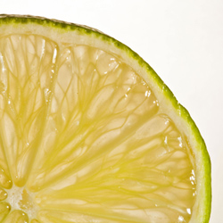

Pancakes
Ingredients
125g plain flour
Pinch of salt
1 large egg
300ml (1/2 pint) semi-skimmed milk
2tsp vegetable oil
1 lemon, sliced into quarters
2tsp sugar
Method
Put the flour, salt, egg and milk into a large mixing bowl with 2tbsp of cold water. Using a hand whisk or a hand-held electric mixer, whisk the ingredients together to make a thin batter.
Heat a small heavy-based non-stick frying pan and add 2-3 drops of oil for each pancake you make. Spoon in about 3tblsp of batter, tilting the pan as the batter is added to swirl it over the base.
When the underside of the pancake is cooked, flip it over to cook the other side. Cook 8 thin pancakes in this way and serve them as soon as they're cooked or keep them warm in a low oven until all 8 are ready.
Serve 2 pancakes to each person with a lemon quarter for squeezing and half a tspn of sugar.
Printer Friendly Version

Delicious Recipes
Listed below are links to five fantastic recipies which you can download or print off, and then use at home to make some great, homely food.
Nordic Chicken, with Rhubarb
Chicken and Tomato Soup
Fruit Salad
Pancakes
Fruit Smoothie
© Daniel Ingram, 2011
All content within is provided for general information only, and should not be treated as a substitute for the medical advice of your own doctor or any other health care professional. We are not responsible or liable for any diagnosis made by a user based on the content of this website. We are not liable for the contents of any external internet sites listed, nor does it endorse any commercial product or service mentioned or advised on any of the sites. See our Links Policy for more information. Always consult your own GP if you're in any way concerned about your health.